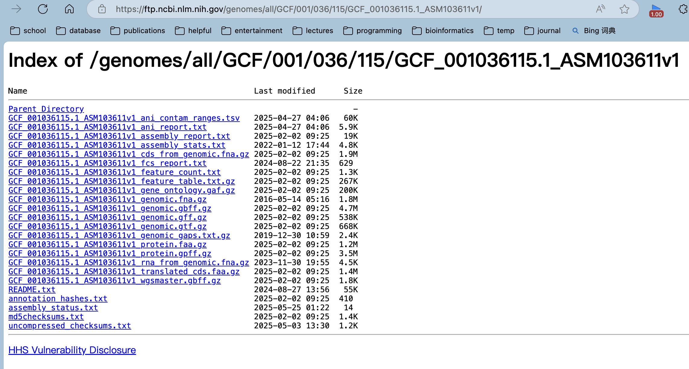

Introduction
在生物信息学研究中，从NCBI下载基因组数据是一项基础的任务。无论是进行基因组比较分析、注释研究还是构建本地数据库，高效获取目标基因组数据都是第一步。
目前已有一些成熟的工具可以实现这一需求，例如：
- ncbi-genome-download：一个功能强大的Python工具
- NCBI Datasets command-line tools (CLI)：NCBI官方提供的命令行工具
然而，在实际使用中，这些工具经常会遇到网络连接不稳定、下载中断等问题。这里介绍一下自己写的一个函数，可以完成批量根据genome accession id下载相关数据的任务，基本不会有网络问题，只要网页能打开NCBI应该就能下。然后也介绍一下上述已有的轮子，他们的功能还是非常多且强大的。
download_ncbi_genome_file
这是一个很简单的R函数，具体实现如下：
NCBI的基因组Accession ID具有特定格式，例如：GCF_001036115.1_ASM103611v1，GCA_000005845.2_ASM584v2
其中：
- GCF开头表示RefSeq数据库
- GCA开头表示GenBank数据库
- 中间9位数字是唯一标识符
- .1表示版本号
- 后缀ASM103611v1是组装名称
文件存储结构与下载原理：
NCBI的FTP服务器采用分层目录结构存储基因组数据。例如，GCF_001036115.1对应的完整路径为： https://ftp.ncbi.nlm.nih.gov/genomes/all/GCF/001/036/115/GCF_001036115.1_ASM103611v1/
该目录下通常包含多种文件类型：
genomic.fna：基因组FASTA文件； genomic.gff：GFF格式注释文件； genomic.gtf：GTF格式注释文件； genomic.gbff：GenBank格式文件
实现逻辑：
- 从ID（如GCF_001036115.1）解析出FTP基础路径
- 通过网页爬虫获取完整ID（如GCF_001036115.1_ASM103611v1）
- 拼接出目标文件的完整URL
- 使用wget或curl等工具下载文件
使用示例：
该函数已集成到pcutils R包中，使用非常简便。
|
|
ncbi-genome-download
软件主页：https://github.com/kblin/ncbi-genome-download
ncbi-genome-download 是一个功能强大的Python命令行工具，专门用于从NCBI FTP服务器批量下载基因组数据。它支持：
- 多种生物分类（细菌、真菌、病毒等）
- RefSeq和GenBank两大数据库
- 多种文件格式下载
- 灵活的筛选条件
安装方法
|
|
|
|
常用参数详解
| 参数 | 说明 | 示例 |
|---|---|---|
-h, --help |
显示帮助信息 | - |
-s, --section |
指定数据库（默认为refseq） | -s genbank |
-F, --formats |
指定下载格式（逗号分隔） | -F fasta,gff |
-l, --assembly-levels |
按组装级别筛选 | -l complete |
-g, --genera |
按属名筛选（逗号分隔） | -g "Escherichia,Salmonella" |
-T, --taxids |
按分类ID筛选 | -T 562 |
-o, --output-folder |
指定输出目录 | -o my_genomes |
-p, --parallel |
并行下载数 | -p 4 |
-v, --verbose |
显示详细日志 | - |
实用示例
|
|
NCBI Datasets command-line tools

NCBI Datasets是NCBI官方推出的新一代数据获取工具，特点包括：
- 官方维护，数据更新及时
- 支持REST API和命令行两种方式
- 可下载基因组、基因、转录本、蛋白等多类数据
- 提供丰富的元数据（JSON格式）
安装
方法一：Conda安装（推荐）
|
|
方法二：直接下载二进制文件
|
|
核心命令结构
|
|
主要子命令
| 命令 | 功能 |
|---|---|
download |
下载数据包 |
summary |
获取数据摘要 |
reformat |
格式转换 |
help |
帮助信息 |
基因组下载详解
|
|
常用选项
| 选项 | 说明 | 示例 |
|---|---|---|
accession |
按accession下载 | accession GCF_000001405.40 |
taxon |
按分类单元下载 | taxon "Escherichia coli" |
reference |
仅下载参考基因组 | --reference |
filename |
指定输出文件名 | --filename ecoli.zip |
include |
指定包含的数据类型 | --include genome,gff3 |
dehydrated |
仅下载元数据 | --dehydrated |
实用示例
|
|
数据处理流程
|
|
高级应用
|
|